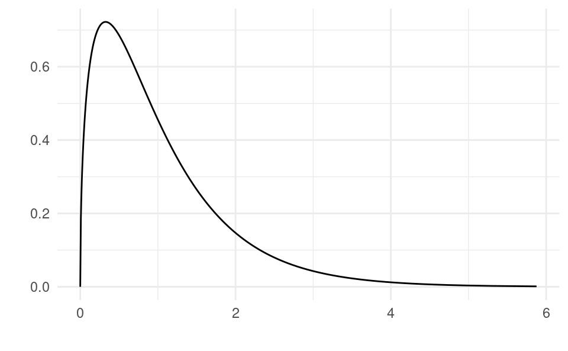
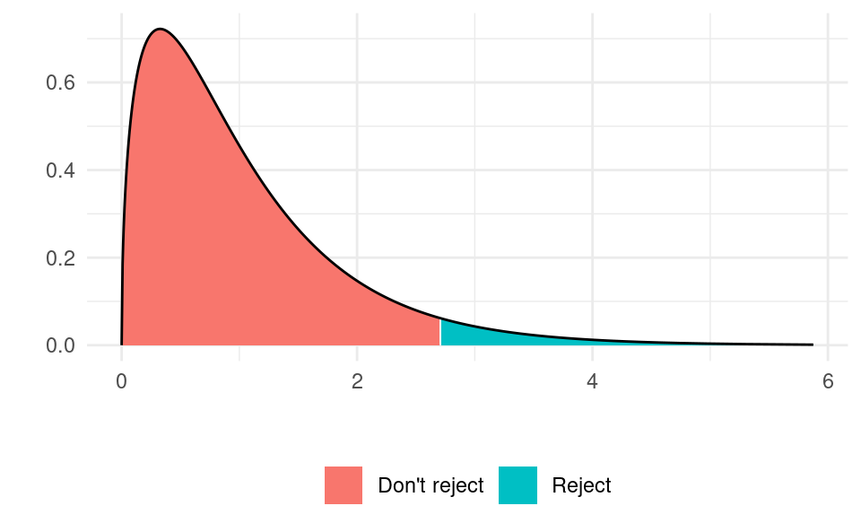
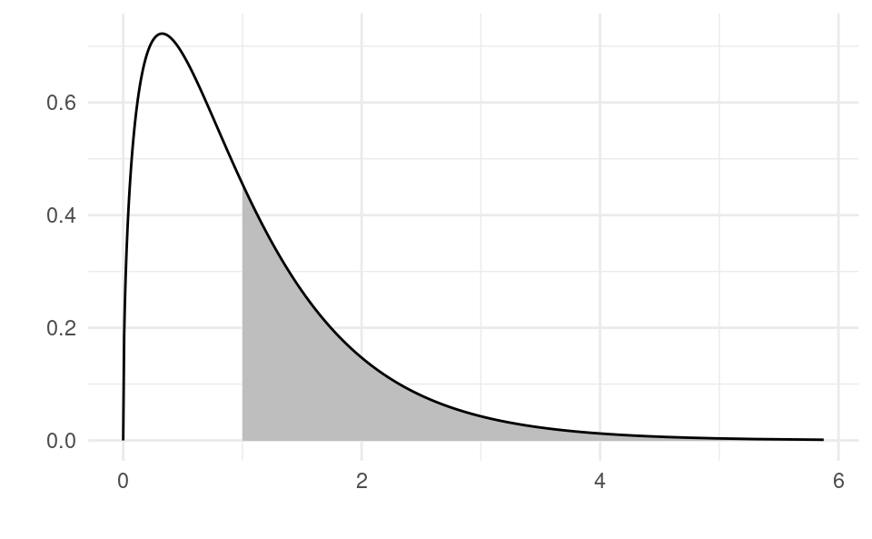

In Chapter 11 we learned how to test for model usefulness for the simple linear regression model. In Chapter 16 (Section 16.4) we learned how to test the usefulness of individual variables in the multiple linear regression model. In this chapter we will learn how to test for the usefulness of the model as a whole in the multiple linear regression model.
To do this we are going to use an F-test which makes use of the F distribution.
19.1F-Test Theory
We want to test if the whole model is useful or not:
\begin{split}
H_0&:\beta_1=\beta_2=\dots=\beta_k=0 \\
H_1&:\text{at least one of } \beta_j\neq 0 \text{ for } j=1,\dots,k
\end{split}
Under H_0, the whole model is useless. Under H_1, there is at least one useful variable in the model. Notice that these only include the parameters in front of regressors and not the intercept \beta_0.
Under the null hypothesis, the test statistic:
F=\frac{SSR/k}{SSE/\left(n-k-1 \right)}
follows an F distribution with k numerator and n-k-1 denominator degrees of freedom. We use F_{k,n-k-1} to denote this distribution.
Let’s take a look at what F_{k,n-k-1} looks like. For k=3 and n=100, the density of the distribution looks like this:
Show code generating the plot below
library(ggplot2)k <-3n <-100df <-data.frame(x =qf(seq(0.000, 0.999, by =0.001), k, n - k -1))df$y <-df(df$x, k, n - k -1)ggplot(data = df, aes(x = x, y = y)) +geom_line() +xlab("") +ylab("") +theme_minimal()

This means that if the null hypothesis is true, then the F-ratio F=\frac{SSR/k}{SSE/\left(n-k-1 \right)} from samples drawn from the population should usually be less then 2.5 because that’s where the bulk of the mass of the distribution is. If in our realized sample we see a value of F larger than, say, 3, then that is something that is very rare under the null hypothesis. If we find that the F we get in our model is large, then it is less likely that we just happened to observe a very extreme sample drawn from the population and more likely that that the null hypothesis is false. That is, it is unlikely that all \beta_1=\beta_2=\dots=\beta_k=0 and that the model is useful.
If we are using a critical value approach with a 5% level then we find the point in the distribution with 95% of the area to the left and 5% of the area to the right. This point turns out to be at 2.6994. So if we find the F-ratio in our sample to be bigger than 2.6994 we reject the null hypothesis and conclude that our model is useful. If we find it to be smaller than 2.6994 then we say that we have insufficient evidence to suggest our model is useful. We show the rejection region and non-rejection region in the same plot:
Show code generating the plot below
library(ggplot2)k <-3n <-100df <-data.frame(x =qf(seq(0.000, 0.999, by =0.001), k, n - k -1))df$y <-df(df$x, k, n - k -1)df$reject <-ifelse(df$x >qf(0.95, k, n - k -1), "Reject", "Don't reject")ggplot(data = df) +geom_ribbon(aes(x = x, ymin =0, ymax = y, fill = reject)) +geom_line(aes(x = x, y = y)) +xlab("") +ylab("") +theme_minimal() +theme(legend.title =element_blank(), legend.position ="bottom")

If our sample is in the red area we don’t reject; if it is in the blue area we do. Notice that the test is a one-sided test.
The p-value is the probability of obtaining a sample at least as extreme as the observed sample. It is the area under the distribution to the right of the observed F-ratio. If we obtained an F-ratio of 1 in our sample, the p-value would be the area to the right of 1, which is equal to 0.396 and indicated by the gray area in the figure below:
Show code generating the plot below
library(ggplot2)k <-3n <-100df <-data.frame(x =qf(seq(0.000, 0.999, by =0.001), k, n - k -1))df$y <-df(df$x, k, n - k -1)df$fill <- df$x >1ggplot() +geom_ribbon(data = df[df$x >1,], aes(x = x, ymin =0, ymax = y),fill ="gray") +geom_line(data = df, aes(x = x, y = y)) +xlab("") +ylab("") +theme_minimal() +theme(legend.title =element_blank(), legend.position ="bottom")

19.2F-Test in R
We will do an F test with the wages, education and experience example.
We construct the null and alternative hypotheses:
\begin{split}
H_0&:\beta_1=\beta_2=0 \\
H_1&:\text{at least one of } \beta_j\neq 0 \text{ for } j=1,2
\end{split}
Under H_0:
F=\frac{SSR/k}{SSE/\left(n-k-1 \right)}\sim F_{k,n-k-1}
We now have to calculate the realized value of F in our sample, f. We estimate the model:
df <-read.csv("wages1.csv")m <-lm(wage ~ educ + exper, data = df)summary(m)
Call:
lm(formula = wage ~ educ + exper, data = df)
Residuals:
Min 1Q Median 3Q Max
-5.5532 -1.9801 -0.7071 1.2030 15.8370
Coefficients:
Estimate Std. Error t value Pr(>|t|)
(Intercept) -3.39054 0.76657 -4.423 0.000011846645 ***
educ 0.64427 0.05381 11.974 < 2e-16 ***
exper 0.07010 0.01098 6.385 0.000000000378 ***
---
Signif. codes: 0 '***' 0.001 '**' 0.01 '*' 0.05 '.' 0.1 ' ' 1
Residual standard error: 3.257 on 523 degrees of freedom
Multiple R-squared: 0.2252, Adjusted R-squared: 0.2222
F-statistic: 75.99 on 2 and 523 DF, p-value: < 2.2e-16
We see that the output of summary() already gives the value of the F-test test statistic and the associated p-value. The realized value of f in our sample is 75.99 and the associated p-value of the F-test is very close to zero (< 2.2e-16). We can extract the value from the first value of summary(m)$fstatistic. The 2nd and 3rd values are the numerator and denominator degrees of freedom, respectively.
summary(m)$fstatistic
value numdf dendf
75.98998 2.00000 523.00000
(f <-summary(m)$fstatistic[1])
value
75.98998
To obtain the critical value we use the qf() function with 3 arguments: (i) one minus the size of the test, 1-\alpha, (ii) the numerator degrees of freedom, k and (iii) the denominator degrees of freedom, n-k-1:
qf(0.95, 2, 523)
[1] 3.012957
We can also get these degrees of freedom from the model output to make sure we use the right numbers. We can do:
(numdf <-summary(m)$fstatistic[2])
numdf
2
(dendf <-summary(m)$fstatistic[3])
dendf
523
qf(0.95, numdf, dendf)
[1] 3.012957
We reject H_0 if the observed f is greater than the critical value, 3.013. Indeed in our case f=75.99 so we reject the null hypothesis.
If we were using the p-value approach we could just read the p-value right from the summary() output. To obtain it manually we can do:
1-pf(f, 2, 523)
value
0
The p-value is numerically zero, so we reject the null hypothesis.
We conclude by saying our model is useful at the 5% level.
19.3 Summary of Steps
19.3.1 Critical Value Method for Testing Model Usefulness
Construct null and alternative hypotheses:
\begin{split}
H_0&:\beta_1=\beta_2=\dots=\beta_k=0 \\
H_1&:\text{at least one of } \beta_j\neq 0 \text{ for } j=1,\dots,k
\end{split}
Under H_0:
F=\frac{SSR/k}{SSE/\left(n-k-1 \right)}\sim F_{k,n-k-1}
Calculate the value of the test statistic, f.
Extract from R output with summary(m)$fstatistic[1].
Reject H_0 if f\geq F_{1-\alpha,k,n-k-1}.
We find F_{1-\alpha,k,n-k-1} in R with qf(1-alpha, k, n-k-1).
Draw a conclusion.
19.3.2p-Value Method for Testing Model Usefulness
Construct null and alternative hypotheses:
\begin{split}
H_0&:\beta_1=\beta_2=\dots=\beta_k=0 \\
H_1&:\text{at least one of } \beta_j\neq 0 \text{ for } j=1,\dots,k
\end{split}
Under H_0:
F=\frac{SSR/k}{SSE/\left(n-k-1 \right)}\sim F_{k,n-k-1}
Calculate the value of the test statistic, f.
Extract from R output with summary(m)$fstatistic[1].
Calculate the p-value and reject if p\leq \alpha.
Find the p-value in R with: 1-pf(f, k, n-k-1).
However, we will see that summary() always gives this, so it’s not necessary to calculate.